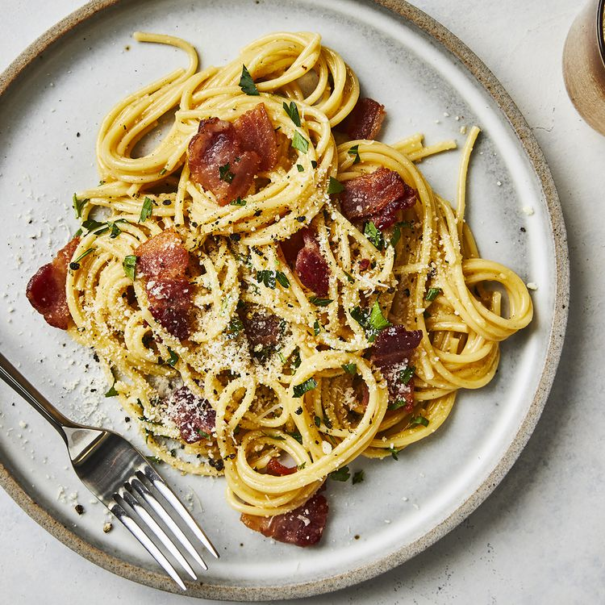

Spaghetti Carbonara

Spaghetti Carbonara
Spaghetti Carbonara is a creamy Italian pasta dish made with spaghetti, eggs, parmesan cheese, bacon, and black pepper. The eggs and cheese create a sauce that is tossed with spaghetti and bacon. It's a quick and popular dish, traditionally made with spaghetti but can be made with other pasta. Serve it as a main or side dish for a delicious and satisfying meal.
Ingredients
- 1 lb spaghetti
- 4 large eggs
- 1 cup grated parmesan cheese
- 8 oz pancetta or bacon, diced
- Salt and freshly ground black pepper to taste
- Olive oil (optional)
- Garlic (optional)
Steps
- Cook the spaghetti according to the package instructions until it is al dente. Reserve 1 cup of the pasta water. Drain the spaghetti and set it aside.
- In a large bowl, whisk the eggs and parmesan cheese together until well combined.
- In a large pan, cook the pancetta or bacon over medium heat until crispy, about 5 minutes. If desired, add some minced garlic during the last minute of cooking and sauté until fragrant.
- Add the cooked spaghetti to the pan with the bacon and toss to combine.
- Remove the pan from heat and immediately pour the egg and cheese mixture over the spaghetti, tossing everything together quickly to coat the spaghetti with the sauce.
- If the sauce is too thick, add some of the reserved pasta water to thin it out.
- Season with salt and freshly ground black pepper to taste.
- Serve hot and enjoy!
Note: It is important to remove the pan from heat before adding the egg mixture to prevent the eggs from scrambling. The residual heat from the pasta and the pan will be enough to cook the eggs and create a creamy sauce.